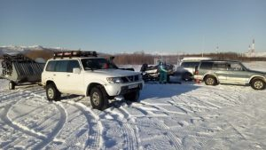
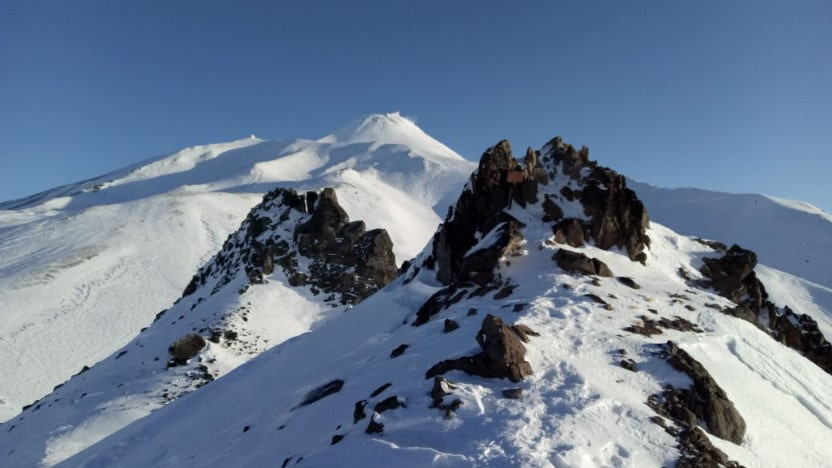
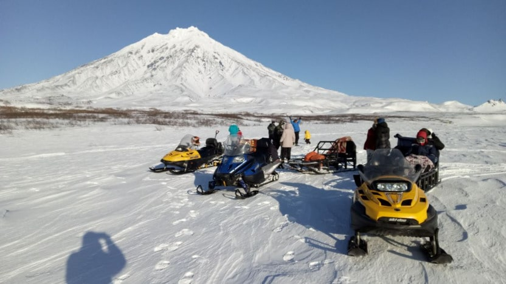
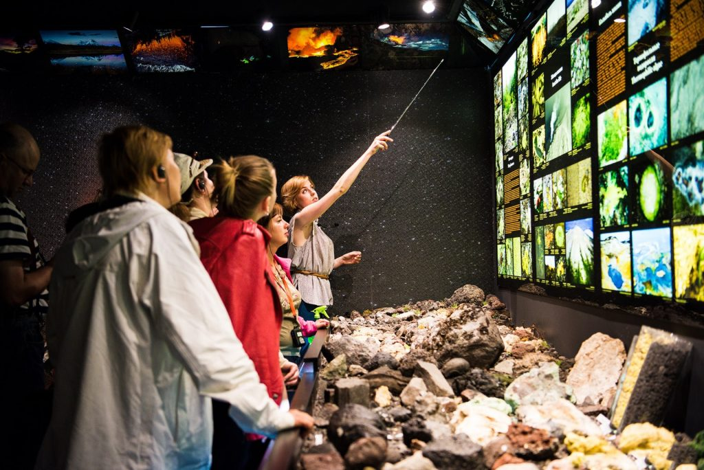

Home > Туры > Тур «Камчатка Зимой и Весной»
Тур «Камчатка Зимой и Весной»
Камчатка привлекательна в любое время года, и каждый сезон преподносит свои прекрасные подарки. Зимой на полуострове снежно, но суровых морозов нет, сказывается дыхание Тихого океана. Завораживающе выглядят белые вершины вулканов, да и вся графика зимней Камчатки очень стильная, элегантная. Снег лежит и в весенние месяцы, но температура воздуха становится выше.
Чем интересен этот тур
Предлагаемый тур по зимней Камчатке радует интересной программой и несложностью маршрута, который подходит и взрослым, и детям. Во время путешествия можно увидеть незабываемое зрелище – берег Тихого океана, закованный льдом, полюбоваться Домашними вулканами, понаблюдать за зимним лежбищем сивучей в бухте Моховая. Туристы получают удивительный опыт купания в горячем термальном источнике в окружении снега. Незабываемо также катание на собачьих упряжках. А знакомство со своеобразной и интересной культурой коренных народов полуострова делает глубже понимание Камчатки.
Программа тура с описанием
День первый
Встреча в аэропорту города Петропавловска-Камчатского. Выйдя из зоны прилета в зону ожидания, гости сразу видят встречающего их представителя фирмы с табличкой. Он сразу берет в свои руки заботу о прилетевших, отвечает на их вопросы, дает пояснения и везет к месту дислокации – на базу отдыха.
После многочасового перелета хочется расслабиться и отдохнуть. На базе для этого есть все условия. Здесь можно восстановить силы в бассейне, вкусно поужинать, погулять по окрестностям, любуясь открывающимися видами.
День второй.
Знакомство с зимней Камчаткой начинается с посещения берега Авачинской бухты, которая не замерзает зимой, как и сам океан. Но у берега вода сковывается льдом, а прибрежная территория лежит в снегу. Добраться до берега на машине невозможно из-за сугробов, поэтому туристов ждет снегоход. Им управляет опытный водитель, а пассажиры садятся в нарты, надежно привязанные к нем. Так они с ветерком добираются до самой кромки берега, откуда открывается впечатляющий вид.
После прогулки на снегоходе туристы едут дальше на автомобиле до мыса Маячный. Свое название он получил благодаря маяку, который был поставлен тут еще в XIX веке и с тех пор перестраивался и совершенствовался не раз.
Маяк называется Петропавловским. Напротив Маячного расположен мыс Безымянный, расстояние до него три километра. Оба мыса образуют как бы ворота, довольно узкий проход в бухту, через который в нее заходят корабли. Огонь маяка моряки видят издали, он для них – важный ориентир и сигнал о том, что скоро будет порт.
Маяк – режимный охраняемый объект, туристов туда не пускают, но им можно полюбоваться, превращенных в эти скалы морским божеством, недовольным их сопротивлением.
Получив незабываемые впечатления и подышав зимним воздухом, туристы возвращаются на базу отдыха.
День третий.
Это день, в который туристы посещают стойбище коренных жителей Камчатки, которое сейчас является этническим музеем под открытым небом. Деревня носит название «Дети Севера». Здесь можно познакомиться с традиционным образом жизни местных народов, попить корякского травяного чая, полюбоваться видами на Домашние вулканы. Обитатели деревни рассказывают об особенностях культуры коренных народов Камчатки, показывают свои песни и танцы.
Чтобы полностью погрузиться в местную специфику, путешественники осваивают езду на собачьих упряжках. Этот традиционный для Севера вид транспорта и сейчас используется в обыденной жизни, но он стал и видом спорта. Ежегодно на Камчатке проходят соревнования по гонкам на собачьих упряжках «Берингия». Это международное мероприятие, на него приезжают не только участники из России, но и из других стран.
Туристам предлагается попробовать себя в роли каюров. Но, прежде чем они сядут в упряжку, опытные погонщики рассказывают о повадках собак, их родословной, о правилах, которые соблюдаются при езде в собачьей упряжке. Не всякая собака подходит для такой роли, а только специальные ездовые породы – лайки, хаски. Это очень умные и выносливые животные, бег с упряжкой – их жизнь, от которой они получают удовольствие и испытывают чувство исполненного долга.
Туристы едут по специально утоптанной безопасной трассе в сопровождении снегоходов.
Управляя собаками, которые, впрочем, и сами прекрасно знают, что делать, путешественники получают незабываемый опыт и впечатления. Нестись по заснеженным просторам на собачьей упряжке – это то, что заряжает бодростью надолго.
После такого обильного впечатлениями дня туристы возвращаются на базу отдыха, где ждут ужин и отдых
День четвертый

Камчатка знаменита своими вулканами, которых здесь много, в том числе активно действующих. Туристы посещают наиболее интересные вулканы и совершают на них восхождение. В программе тура – посещение подножия Авачинской сопки и небольшое восхождение на гору Верблюд.
Группу вулканов, к которой они относятся, называют Домашней.
Путешественники добираются до Авачинского перевала на снегоходах, которые едут по руслу реки и укатанной снежной дороге. Чем ближе горы – тем больше снега. По нему может беспрепятственно передвигаться только снегоход. Туристам не придется много ходить пешком, так как это сложно из-за сугробов. Но остановки осуществляются в тех местах, где есть такая возможность, и откуда открываются прекрасные виды на заснеженные горы.
После экскурсии группа возвращается на базу отдыха, где их всегда готов принять термальный бассейн под открытым небом.
День пятый.
Утром туристы на джипах отправляются на юг от базы отдыха, в район с высокой вулканической активностью. Через паратунские леса группа проедет к горному перевалу, что займет меньше часа. Отсюда с километровой высоты будет видна панорама долины и совсем близко —правильный конус Вилючинского вулкана.
Проезжаем еще 20 км и доберемся до сегодняшней цели — действующего вулкана Горелого (1829 м). До вершины предстоит преодолеть всего 300 метров. У вулкана сложное строение с 11 кратерами, мы увидим три из них: бирюзового цвета Голубое озеро (глубина — 150-200 м) рядом с небольшим ледником; Чашу (глубина — примерно 75 м), ранее заполненную кислотой, а теперь пересохшую после извержения; Активный (глубина — 100 м) с кислотным оранжевым озером, постоянными парогазовыми облаками и со стенками из красивых горных пород.
После экскурсии по кратерам сопки Горелой мы отправимся к водопаду Опасному, который находится на склонах одного из самых активных вулканов на Камчатке — Мутновского. Водопад образует сернистая Вулканная река: она берет начало в кратере, проходит путь в три километра по ущелью и в одном месте срывается мутным потоком с высоты 80 метров. Сочетание в одном месте вулкана, водопада и каньона сделало его памятником природы мирового значения.
Малая Долина гейзеров. Это часть горной долины, которую еще называют Дачными горячими источниками, находится у подножия Мутновского вулкана и считается самой крупной группойкомплекса Мутновских источников. Здесь кипят грязевые котлы, дымятся фумаролы. Горячие газы проходят через холодную воду ручья и нагревают его. Вас проведут по безопасному маршруту и покажут всю эту активность.
База отдыха. В конце дня возвращаемся в Паратунку для восстановления сил и отдыха в термальных бассейнах.
День шестой.
Предпоследний день тура посвящен главному городу Камчатки – Петропавловску-Камчатскому.
Экскурсовод рассказывает об истории города, о том, чем и как он живет сейчас. Туристы любуются панорамой Авачинской бухты, обозревают памятники мореплавателям. После этого группа посещает интересный интерактивный музей «Вулканариум». Инициатором его создания был известный вулканолог Сергей Самойленко.
Экспозиция рассказывает о процессах, происходящих в земных недрах, показывает особенности вулканизма. Посетители являются активными участниками экскурсии, они могут трогать экспонаты, моделировать процессы на макетах.
После музея путешественники отправляются к бухте Моховая, где зимуют сивучи. Убедившись, что эти животные чувствуют себя прекрасно, туристы направляются на рыбный рынок. Это впечатляющее место, где можно в обилии увидеть богатство Камчатки – дары моря. Разные виды икры, крабов, лососевых рыб, корюшка, морской окунь, палтус… Всего не перечесть, буквально разбегаются глаза перед таким ассортиментом. Икру, соленую и копченую рыбу можно попробовать с прилавков. Это просто праздник вкуса!
Гид показывает туристам лучшие сувенирные магазины города, чтобы можно было приобрести на память какие-то милые вещи, которые потом, вдали от Камчатки, будут напоминать о путешествии в этот край.
День седьмой.
Последний день недельного тура. Туристы доставляются в аэропорт, где их ждет самолет на Большую землю, как здесь принято говорить. Всегда есть легкая грусть от расставания с Камчаткой. Но все, кто побывал здесь, навсегда оставляют в этих краях частичку своего сердца.
Стоимость тура – 75 000 руб/чел.
В стоимость включено:
- проживание на базе отдыха с бассейном в двухместных номерах с удобствами;
- посещение бассейна на базе отдыха;
- завтраки в гостинице;
- групповые экскурсии и весь трансфер по программе;
- обеды \ перекусы на экскурсиях в дни 2, 3, 4, 5;
В стоимость не входит:
- перелет до Петропавловска-Камчатского;
- обеды и ужины на базе отдыха;
- страховка (обязательно)
- обед в кафе в день 6